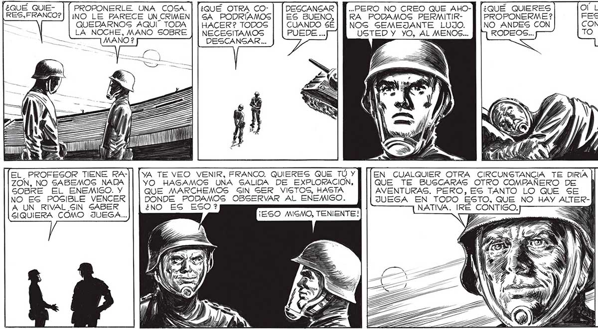
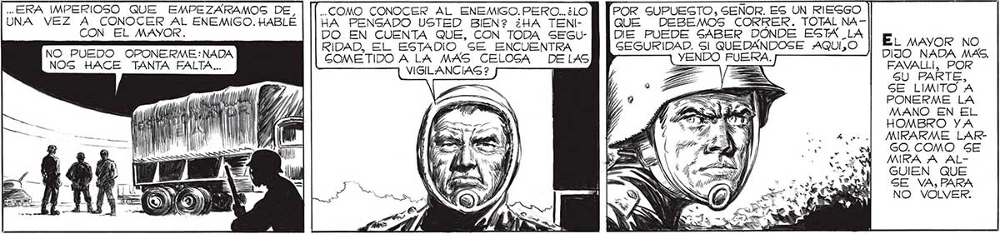

¿QUÉ QUIE, | [ PROPONERLE UNA COSA. | [¿QUÉ OTRA CO: | [DESCANSAR | [[...PERO NO CREO QUE AHO-] (¿QUÉ QUIERES O' LO QUE DIJO ELPRO-| 135 O?) |:NO LE PARECE UNCRIMEN| | 5A PODRÍAMOS| |ES BUENO, | [RA PODAMOS PERMITIR- || | PROPONERME? FESOR SOBRE EL DES= QUEDARNOS AQUÍ” TODA | | HACER? TODOS | | CUANDO SÉ] [NOS SEMEJANTE LUJO. P [NO ANDES CON CONOCIMIENTO ABSGOLULA NOCHE, MANO SOBRE | | NECESITAMOS ms USTED Y YO, AL MENOS... ] q RODEOS... TO QUE TENEMOS DEL e = ENEMIGO. DESCANGAR ... "1 EL. PROFESOR TIENE RA-|| [ya TE VEO VENIR, FRANCO. QUIERES QUE TÚ Y EN CUALQUIER OTRA CIRCUNSTANCIA TE DIRÍA ZON, NO SABEMOS NADA YO HAGAMOS UNA SALIDA DE EXPLORACION, QUE TE BUSCARAS OTRO COMPAÑERO DE SOBRE EL ENEMIGO. Y QUE MARCHEMOS GIN GER VISTOS, HASTA AVENTURAS. PERO, ES TANTO LO QUE SE MIENTRAS HABLA NO EG POGIBLE VENCER DONDE PODAMOS OBSERVAR AL ENEMIGO. JUEGA EN TODO ESTO, QUE NO HAY ALTER- BA PENSABA EN A UN RIVAL SIN SABER ¿NO ES ESO? NATIVA. IRÉ CONTIGO. ELENA Y MARTITA. GIQUIERA COMO JUEGA... - SS LA GALVACION DE IS a <= | ELLAS ERA LO QUE MAS ME IMPORTABA EN EL MUNDO. Y FRANCO, EL OBRERO FUNDIDOR, TENIA_RAZÓN : Gl QUERÍAMOS VENCER, Sl DESEABA YO_HACER ALGO POR MI PEQUEÑA EAMILIA ... ¿ERA IMPERIOSO QUE EMPEZARAMOS DE, | [[..comO CONOCER AL ENEMIGO. PERO..:LOB Tror SUPUESTO, SEÑOR. ES UN RIESGO UNA VEZ A CONOCER AL ENEMIGO. HABLÉ | [lA PENSADO USTED Bien? ¿HA TEN MhoUE DEBEMOS CORRER. TOTAL NACON EL MAYOR. go EN CUENTA gus. CON TODA seu] [DE PUEDE SABER DÓNDE ESA E uno No : L ESTADIO SE ENCUENTRA SEGURIDAD. SI QUEDANDOSE AQUIÍZO ) y A SL COMETIDO ALA MAS CELOGA DELAS VENDO FUERA. DIJO NADA MAS. 0. VIGILANCIAS ? == = FAVALLI, POR k : SU PARTE, SE LIMITO A PONERME LA MANO EN EL HOMBRO YA MRARME LARGO. COMO SE MIRA A ALGUIEN QUE SE VA, PARA NO VOLVER.

